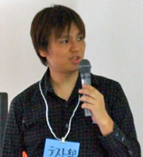

GREE Tech Talkも第4回目となりました。
今回のテーマは、ソフトウェアテストです。
皆様、テストファーストでプログラミングはできていますか？
スマートフォンが普及してきて、タッチインターフェイスやリアルタイム通信と言った、
テスト対象として、やっかいな存在が増えてきました。
また、仕様も複雑になりがちなため、効果的な自動化テストも真剣に考えなくてはならない今日この頃ではないでしょうか。
グリーでも、スマートフォンに対する取り組みは、まだまだ道半ばですが、 今回は、グリーでのやり方をお話ししたり、有識者の方々の講演を聞き、懇親会で歓談することで、 スマートフォンでのテストの取り組み方に関して、皆様とコミュニケーションを図れればと考えています。
2013年9月11日(水) 開場：18:30、終了：22:50
東京都港区六本木6-10-1 六本木ヒルズ森タワー
グリー株式会社
ハッシュタグ: #greetech04
松木 晋祐 |
株式会社ACCESS 技術戦略課/本社品質保証責任者。NPO ASTER会員/テスト自動化研究会(STAR) 主査等。ソフトウェアは作るのも使うのも壊すのもすべて好き。 |
山本 健 |
グリー株式会社 ビジネスオペレーション本部 プラットフォームQAチーム マネージャ。 パーソナルコンピュータ黎明期にPCを使い始めるも，若気の至りか芸術の道へ大きく寄り道し東京芸術大学大学院で油画を専攻。在学中から始めたサイト制作・携帯コンテンツ運営などを経て受託開発のテスト業務に携わる。その後ベンチャーを転々としつつ，より早くより深いWebアプリケーションの品質管理を目指して奮闘中。 |
奥村 典史 |
フロム・ソフトウェア、ナウプロダクションを経て、現在は、グリー株式会社 ネイティブゲームスタジオ どうぶつフレンズクライアント開発リード。 ActionScript3でゲームのUnitテストを書きながらの開発をしており、 Unityでも最近Unitテストを導入し、開発中。 |
|  太田 健一郎 |
株式会社SHIFT所属。大手 SIer にて開発支援ツール開発SE を経験した後、商用・オープンソースを使った各種の自動テスト、パフォーマンス・テスト、インスペクションをお客様プロジェクトで担当。その後、大手 Web サービス会社にてJenkins を始めとするCIテスト自動化、パフォーマンス・チューニングなどを担当。 現在、株式会社SHIFT にてJenkins の導入、トレーニングを担当。有志の仲間達と共に『入門Jenkins―実践「継続的インテグレーション」』を 2012 年に執筆。その他、コミュニティ活動として、JaSST 実行委員会、テスト自動化研究会ほかに所属し、公私ともにCI を始めとする自動化に情熱を燃やしている。 |
岡崎 隆之 |
グリーSNS iOSアプリならびにバックエンドエンジニア、国際化の技術リードを経て、現在はグリーの運用インフラを支えるミドルウエアの開発リード。2006年頃よりHudson/Jenkinsを使い始めエンタープライズJava、電子書籍、iOS、Android、PHPなど幅広い領域でJenkinsを導入した開発を行う。 |